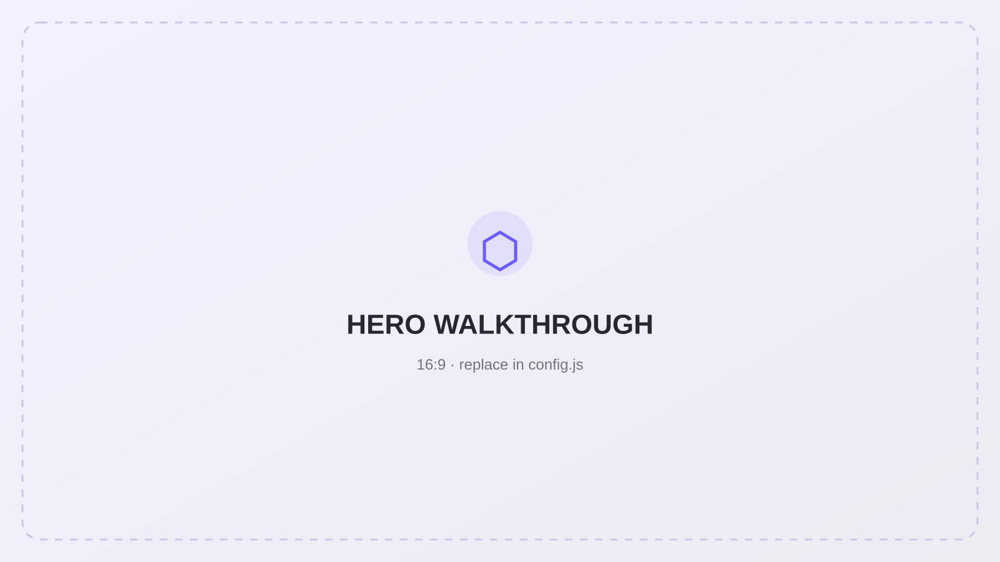
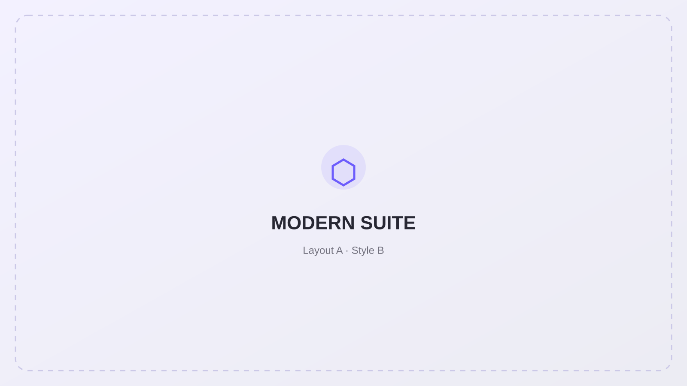
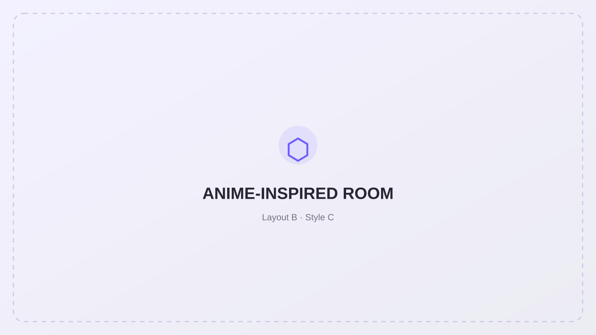
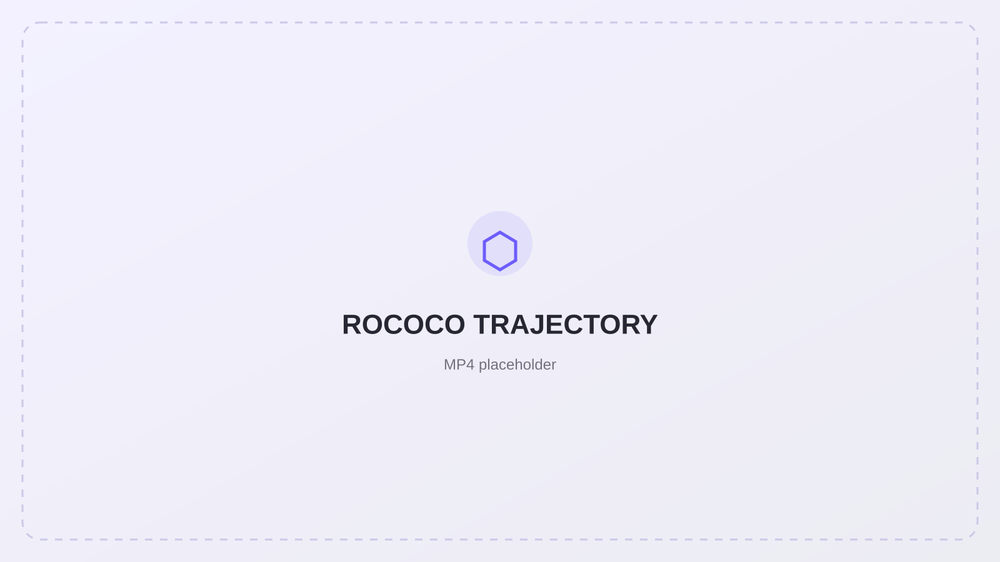
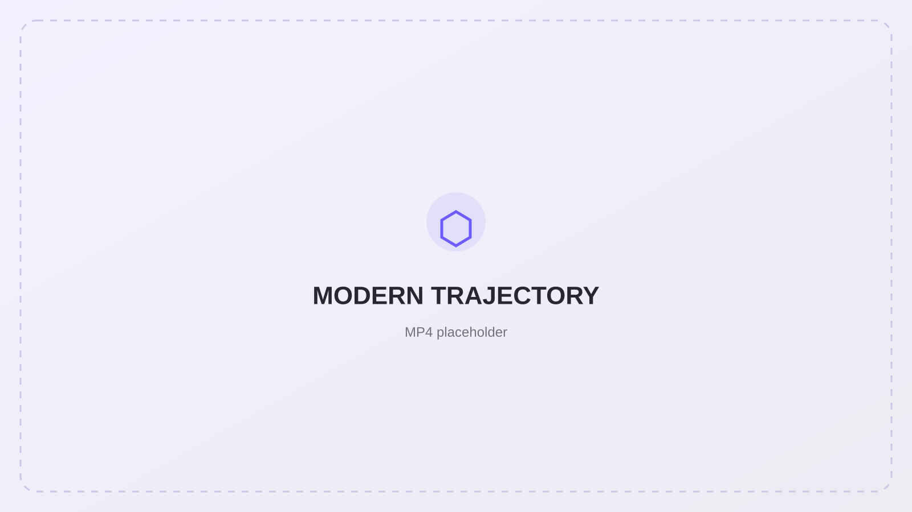
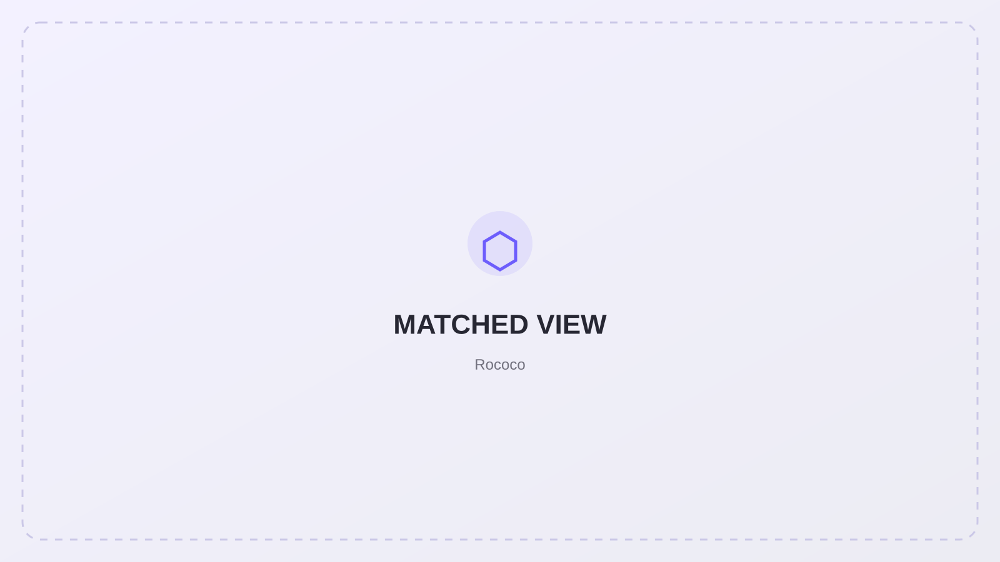
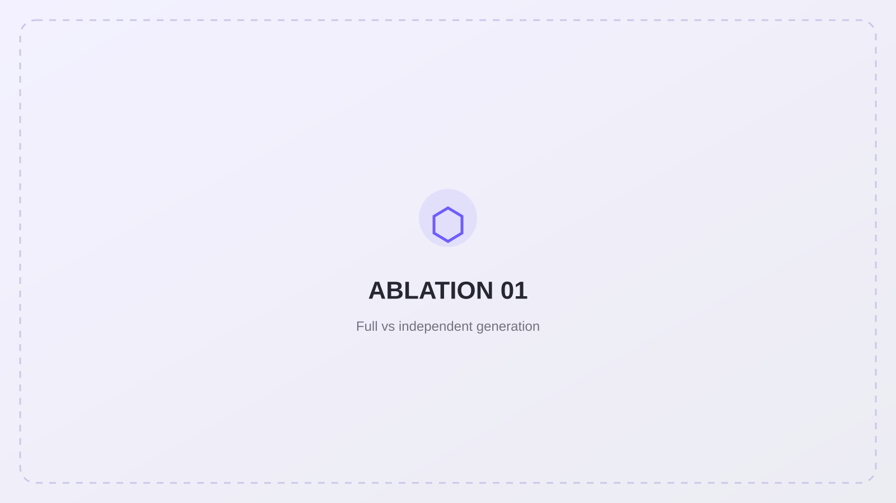
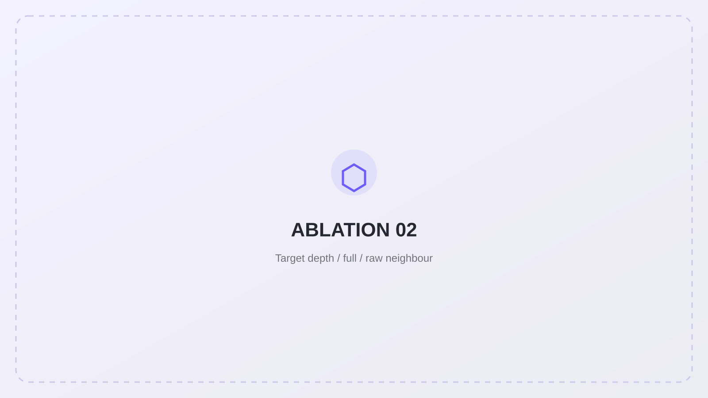
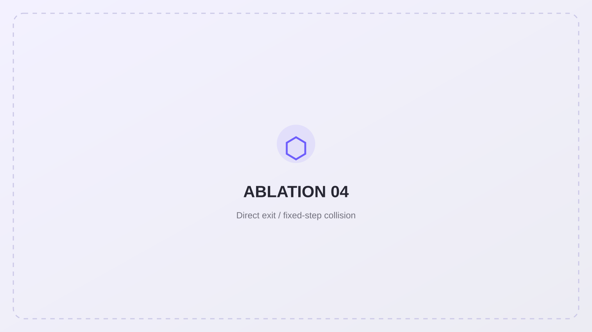

Fully automated
Asset generation, reintegration, room appearance, camera planning, multi-view generation, validation, repair and reconstruction run without per-scene manual editing.
MSc Dissertation · 2026
A geometry-grounded scene-construction system that keeps explicit layout, hierarchy, cameras and metric depth active throughout asset generation, multi-view synthesis and 3D Gaussian Splatting reconstruction.

Overview
The framework starts from a declarative indoor-scene description. Known spatial facts are preserved as a persistent contract, while pretrained generative components contribute visual detail and appearance without taking control of the requested layout.
Asset generation, reintegration, room appearance, camera planning, multi-view generation, validation, repair and reconstruction run without per-scene manual editing.
Scaffolds, room geometry, calibrated cameras, metric depth and stable ownership remain authoritative across the pipeline.
Spatial layout and visual appearance are separated, allowing the same layout to be restyled or a different layout to pass through the same generic stages.
Representative scenes
The Rococo and modern suites share the same spatial arrangement; the anime-inspired room uses a different layout and object inventory.


Method
The same explicit geometry is progressively enriched, observed, transferred across views and finally reconstructed as a persistent 3D representation.
Hierarchy, transforms, generation modes and approximate geometry define the spatial contract.
Generated detail is aligned back to the declared structure rather than replacing it.
Physical feasibility, room-shell coverage and shared visible surface area determine the observation set.
Trusted neighbouring appearance is geometrically transformed into the current camera before generation.
Unreliable views are prevented from propagating, early views can be revisited, and the final calibrated RGB-D set trains depth-supervised 3DGS.
Results
The videos below show final 3DGS walkthroughs of the three generated scenes and demonstrate that the representation remains coherent under novel viewpoints.

Ornate decoration, gilded moulding and pastel upholstery under the same base layout used for the modern variant.

A restyled version of the same layout using restrained materials, simplified furniture and neutral surfaces.
A different room layout and object inventory processed through the same generic scene-construction stages.
72 training views · 108 frozen novel views · 72 adjacent-view pairs.
Controllability
These views compare the same scene layout under two visual styles. The recognisable bed, bench, wardrobe and room boundaries show that appearance can change substantially while the requested spatial structure remains stable.

Ablations
Each study removes one coordination mechanism from the full pipeline and shows the resulting failure mode both visually and quantitatively.
Ablation 01
Independent per-view generation makes the training observations harder to explain with one persistent 3D representation and produces visible smearing, duplication and translucent artefacts after reconstruction.

Ablation 02
An unaligned reference can leak its own viewpoint, composition and visibility pattern into the target. Explicit target-space reprojection removes a correspondence problem the geometry has already solved.

Ablation 03
Early views can be geometrically valid yet commit to a weaker appearance choice because few trusted neighbours are available. A single bounded revisit lets those views use the stronger scene-level consensus available later.
Ablation 04
The direct OBB exit calculation gives deterministic geometric progress in tight configurations, whereas bounded local stepping can leave a selected camera almost completely occluded.

Context
These values are shown as contextual reference only because the compared systems were evaluated on different scenes and camera trajectories.
| Method | CLIP-IQA+ ↑ | CLIP Aesthetic ↑ | Reproj-AbsRel ↓ |
|---|---|---|---|
| WorldMesh | 0.5114 | 5.5799 | 0.0761* |
| Proposed pipeline | 0.5271 ± 0.0774 | 5.646 ± 0.920 | 0.00648 ± 0.00425 |
* WorldMesh Reproj-AbsRel shown here corresponds to its stronger reported configuration. Different scenes and camera-pair protocols prevent a controlled ranking.
System
Scene-specific behaviour comes from structured scene data rather than object-category branches.
The same scaffold, hierarchy, owner identity, calibrated cameras and metric depth remain available downstream.
Retries, fallbacks and trust state keep one failed generation from stalling or contaminating the whole scene.
Stage artifacts, scoped caching and resumable outputs reduce the cost of long-running experiments.
Citation
@mastersthesis{chen2026geometryfirst,
title = {A Fully Automated Geometry-First Framework for Controllable Indoor 3D Scene Generation},
author = {Chen, Rundong},
school = {Trinity College Dublin},
year = {2026}
}
MSc Dissertation · Computer Science (Augmented and Virtual Reality) · 2026